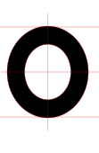
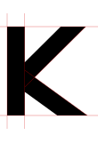
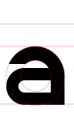

LESS.
BUT
BETTER
BUT
BETTER
Eine variable Grotesk für Titel und Branding. Neun Achsen steuern Strichstärke, Proportionen und einzelne Buchstabenformen.
LK Nova herunterladenGerade Stämme, gerundete Bögen und eng gesetzte Titel.
Für Branding, digitale Produkte und Print. Für Bedienoberflächen und längere Texte mit einer gut lesbaren Textschrift kombinieren.



Rechtecke bilden die Stämme, gerundete Konturen die Bögen. Übergänge werden tangential geführt. Optische Überhänge gleichen runde und gerade Formen aus.
Groß- und Kleinbuchstaben folgen gemeinsamen Proportionen und Konstruktionsprinzipien. Λ und Ξ sind separate Zeichen für LOUIS KΛISΞR; A und E bleiben unverändert.
Das Zeichen ■ sitzt auf der Grundlinie. MARK verändert seine Größe von 10 bis 40 % der Versalhöhe. Bei den anderen Achsen bleibt es quadratisch.
LK Nova entstand für die Markenidentität von Louis Kaiser. Helvetica Neue diente als visuelle Referenz für kräftige Groteskproportionen und enge Laufweite.
Die Konturen wurden eigenständig aus geometrischen Formen konstruiert. Kurven, Innenräume, Ziffern und Anschlüsse wurden in mehreren Korrekturrunden verfeinert. Fremde Schriftkonturen sind nicht enthalten.
Lateinische Buchstaben, zusätzliche europäische Zeichen, Ziffern, Interpunktion und ausgewählte Symbole, darunter Λ, Ξ, ⇒ und ■.
Desktop/Variable/LKNova-VF.ttf unter macOS mit der Schriftsammlung oder unter Windows über Installieren hinzufügen. Für Anwendungen ohne variable Unterstützung stehen sechs statische Gewichte bereit. Vorzugsweise die variable oder die statische Familie installieren, um doppelte Einträge zu vermeiden.
Gewicht 900, Breite 100, aufrecht, Laufweite −0,05 em (−50 bei einer Skala in Tausendstel Geviert). LK Nova ist eine Display-Schrift; für längere Texte eine separate Textschrift verwenden.
font.css und LKNova-VF.woff2 zusammen ablegen und die Klasse lk-display verwenden. Die Unterstützung variabler Achsen und Farbfonts hängt von der Anwendung ab. Ein rotes Quadrat als SVG liegt bei. Animationsbeispiele berücksichtigen reduzierte Bewegung.
Kostenlose persönliche und kommerzielle Nutzung, einschließlich Installation, Einbettung, Veränderung und Weitergabe. Keine Namensnennung, Tantiemen oder Gebühren pro Arbeitsplatz. Die Schriftlizenz erteilt keine Rechte an der Marke LOUIS KΛISΞR.
Nutzungserlaubnis lesen ⇒